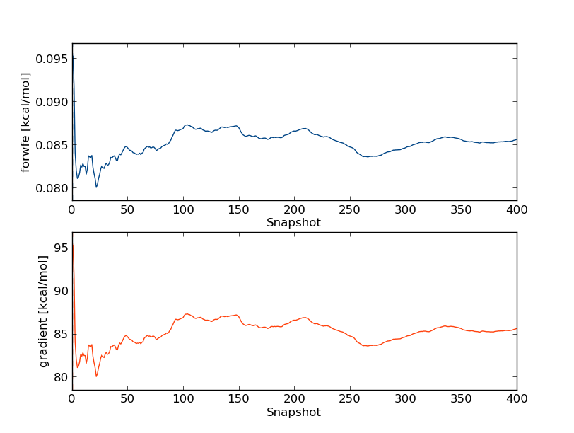

Absolute hydration free energy of 2-chlorosyringaldehyde
In this tutorial we will calculate the solvation free energy of an organic molecule, 2-chlorosyringaldehyde, in water.
2-chlorosyringaldehyde is a substituted benzene molecule with multiple functional groups:

You could imagine extending this process to other, drug-like small molecules or ligands of interest.
Prerequisites
l11.pdb - the structure of the 2-chlorosyringaldehyde molecule ('l11' for short) in PDB format
The l11 molecule should be prepared and ready for use with ProtoMS. In this case we are only interested in evaluating the hydration free energy starting from a single, low-energy conformation.
However, in many cases you might wish to include multiple starting conformations, or at least multiple repeats, in your estimates to ensure your simulations sample all relevant conformations. The usual caveats about setting up structures (protonation state etc.) also apply - you can read more here.
Simple setup
Setup
The simplest way to setup the simulation is by typing the following:
python2.7 $PROTOMSHOME/protoms.py -s dualtopology -l l11.pdb --absolute
this sets up a dual topology simulation of the molecule in a box of TIP4P water, perturbing between the full interaction of the molecule with its surroundings and the zero interaction of a dummy atom with its surroundings.
The simulation will run 5 m equilibration steps and 40 m production steps for each of the 16 λ-values. Output will be printed to files every 100 k moves and Hamiltonian replica-exchanges between neighbouring λ-values will be attempted every 200 k moves.
Why dual topology?
For these sorts of absolute free energy calculations (i.e. 'perturbing to nothing'), dual topology simulations will generally provide smoother free energy curves and more precise free energy estimates with smaller errors, particularly at the endpoints of the perturbation.
They also have the added advantage that no gas-phase simulations are needed to complete the thermodynamic cycle (see the ProtoMS manual for theory details).
Although in theory these calculations can also using a single topology approach, by default protoms.py will suggest you use dual topology. Single topology simulations can be set up using the individual scripts in the tools folder if you prefer.
Why --absolute?
The -s dualtopology argument tells the script to set up a dual topology free energy simulation and the --absolute argument tells the script that no second ligand exists and that the ligand specified by -l should be perturbed to a dummy particle (nothing).
Without the --absolute, the script will expect you to input a second ligand!
How do I know if the setup has been successful?
Protoms.py will print out a series of information messages if successful, and error messages if there are any problems.
For more detailed information there is also a log file (called protoms_py.log by default), which includes debug messages and defines the values of any command line flags you give to protoms.py, or their default values if you don't set any.
However, the safest way to check is to read over the created files and visualise the created system. You can read more about the files that the setup script creates further down on this page, and you can visualise the system that will be simulated with (for instance) VMD. Note the highlighted dummy atom position in green:
vmd -m l11.pdb l11_dummy.pdb l11_box.pdb

Execution
To run the simulation we need to execute:
mpirun -np 16 $PROTOMSHOME/protoms3 run_free.cmd
This is most conveniently done on a computer cluster. The calculations take approximately 7 h to complete using the Iridis4 system at the University of Southampton.
Equilibration analysis
When the simulations are finished we need to analyse the simulation and extract the free energy change associated with perturbing our ligand to nothing. All the results files are conveniently ordered by λ-window in the out_free folder.
Let's start by evaluating whether the system is well equilibrated. We can use the calc_series.py script to do this. Type:
python2.7 $PROTOMSHOME/tools/calc_series.py -f out_free/lam-0.000/results
This will bring up a wizard to look at a choice of various time series of results from the 0.000 λ-window (you can also run calc_series.py -h to see how to define these choices from the command line).
First of all, let's see how the total energy of the system changes with time. Type total followed by enter twice. This will plot the total energy as a function of simulation snapshot. It should look something like this:
Note that the total energy decreases continually at the beginning of the simulation before levelling off. The calc_series.py script also gives you an extimate of when the series is 'equilibrated',
i.e. statistically when it levels out (denoted by the dashed line on the plot). Why does the total energy take so long to equilibrate? Let's take a closer look at the contributions to the total.
Open up calc_series.py -f out_free/lam-0.000/results again and type:
total
inter/solvent-solvent/sum
inter/l11-solvent/sum
And then choose option 5 for displaying the graphs on the same plot, normalised to the energy of the final snapshot. You should see something like this:

Clearly the change in the total energy is dominated by the solvent-solvent interactions, while the ligand-solvent interactions remain fairly constant throughout.
But what effect does this have on the forward & backward free energy differences, and hence the gradients for our TI calculations? Let's take a look:
gradient
forwfe
This time use option 2 for displaying the graphs as sub-plots, as they have very different scales:

So we can see that the free energy gradients seem
Thus, we have to discard very little of the simulation when we compute the free energy.
Next, we will analyse how effective the λ replica exchange was. Type
grep "lambda swaps" out_free/lam-0.000/info
and this will give you the overall acceptance ratio of the λ swaps. It should be around 60% for this perturbation, indicating that the overall effectiveness is acceptable. Next, we will look at individual replicas and see how they exchange λ-value throughout the simulation. This can be done with
python2.7 $PROTOMSHOME/tools/calc_replicapath.py -f out_free/lam-*/results -p 0.0 0.2 0.8 1.0 -o replica_path_free.png
to plot the path of the first two λ-values. It should look something like this.

as is clear, these the replicas was not able to traverse the full λ-space within the simulation time. Also the replica starting with λ=1.0, did not exchange a single time throughout the simulation. Hence, the replica exchange was not fully efficient.
Now, we will estimate the free energy. We will do this both with thermodynamic integration, Bennet's acceptance ratio (BAR) and multi BAR (MBAR). To do this you can type
python2.7 $PROTOMSHOME/tools/calc_dg.py -d out_free/ -s 10
A typical result is between 0 and 1 kcal/mol. The experimental hydration free energy of benzene is -0.9 kcal/mol, thus this free-leg should be fairly accurate. Notice that only 10 snapshots are removed from the 400 snapshots when calculating the free energy, because the analysis with calc_series.py indicated that the simulation was equilibrated very much from the start.
It is important to study the gradient of the TI calculation. It should be smoot in order for the TI to work properly. For the free leg it should look something like this

Now, we need to repeat the analysis for the bound leg. When you plot the evolution of the total energy using calc_series.py you often find that it takes a very long time for the total energy to converge. This is because in the bound simulation, the total energy is dominated by solvent-solvent and protein-solvent interactions that has very little effect on the free energy of binding. Thus we should not look at the total energy when investigation convergence, rather we should look at the interaction between the ligand and either protein or solvent.
Type
python2.7 $PROTOMSHOME/tools/calc_series.py -f out_bnd/lam-0.000/results
and when your prompted for the series to analyze, type the following series
total
inter/solvent-solvent/sum
inter/protein1-solvent/sum
inter/bnz-solvent/sum
inter/protein1-bnz/sum
and when asked for the type of plot, simply select option 5. The plot should look something like this.

You will notice that the interaction energy between the ligand and its surrounding equilibrates very quickly. The computed free energy should be between 9.0 and 10.0 kcal/mol (depending on estimator and equilibration removed).
In a double-decoupling simulation you need to calculate the free energy of adding the harmonic restraint as well as taking into account the symmetry of benzene, σ (which is 12). Therefore, we need to evaluate the following ΔGrest = RT ln σVsim / V0. Where RT is the gas constant multiplied by the absolute temperature and V0=1660 A3. The simulation volume of benzene Vsim can be estimated from (2πRT / k)3/2 where k is the harmoni spring constant. With a spring constant of 2 kcal / mol, this free energy evaluates to -2.34 kcal/mol. (Note that ProtoMS defines the harmonic restraint using k, rather than 0.5 k, the above formula for the simulation volume is correct for a restraint with 0.5 k)
The standard binding free energy of benzene can the be estimated from:
ΔGbind = ΔGfree – ΔGbound – ΔGrest
and it should evaluate to between -6.0 and -6.5 kcal /mol. The experimental value is -5.2 kcal/mol, so we are a little bit off.
Exploring more options
By running protoms.py as above, you accept the standard number of λ-values, simulation length etcs. The values of these parameter were chosen from experience and should work for most systems. However, there are situations when you want to do something else. Here, we will go through some of the many available options. To know about other options you have to read the manuals for the tools or the MC program. You might also have to setup your system by executing the individual tools separately.
Running longer simulations
There are two arguments that you can invoke to run a longer simulation
--nequil - this controls the number of equilibration steps--nprod - this controls the number of production steps
by typing for instance
python2.7 $PROTOMSHOME/protoms.py -s dualtopology -p protein.pdb -l benzene.pdb --absolute --nequil 10E6 --nprod 50E6
you will run 10 m equiliration steps and 50 m production steps (instead of the 5 m and 40 m that is default)
Running with more λ-values
The argument that controls the number of λ-values is called --lambdas.
by typing for instance
python2.7 $PROTOMSHOME/protoms.py -s dualtopology -p protein.pdb -l benzene.pdb --absolute --lambdas 24
you will initiate 24 λ-values rather than default 16. You can also give individual λ-values to the argument. For instance
python2.7 $PROTOMSHOME/protoms.py -s dualtopology -p protein.pdb -l benzene.pdb --absolute --lambdas 0.000 0.033 0.067 0.133 0.200 0.267 0.333 0.400 0.467 0.533 0.600 0.667 0.733 0.800 0.867 0.933 0.967 1.000
will add two new λ-values at 0.033 and 0.967 to the 16 created by default.
Running independent repeats
Usually it is wise to run several indepent repeats of your calculation to check for convergence and to obtain a good estimate of the statistical uncertainty. The argument that controls the number of independent repeats is called --repeats or just -r.
by typing for instance
python2.7 $PROTOMSHOME/protoms.py -s dualtopology -p protein.pdb -l benzene.pdb --absolute -r 5
you will create 5 input files for the bound leg and 5 input files for the free leg. Therefore, you also need to execute ProtoMS 10 times with the different input files. The output will be in 10 different folders, e.g. out1_bnd and out2_bnd.
The harmonic restraint added by protoms.py is by default 1 kcal/mol/A2. It can sometimes be necessary to optimize it so that the free energy is not affected by the magnitude of the restraint. This can be done by running a short unrestrained simulation and estimate the force constant from the root mean square deviation by applying the equipartition theorem.
To setup the short unrestrained simulation, first make a separate folder for the simulation. Then you can type
python2.7 $PROTOMSHOME/protoms.py -s sampling -p protein.pdb -l benzene.pdb --nprod 500E3 --nequil 0 --dumpfreq 1E3
$PROTOMSHOME/protoms3 run_bnd.cmd
this 50 k simulation should only take about five minutes to execute. The simulation output can be found in out_bnd.
To calculate the RMSD and estimate an appropriate force constant, type
python2.7 $PROTOMSHOME/tools/calc_rmsd.py -i benzene.pdb -f out_bnd/all.pdb -l BNZ -a C4
where BNZ is the residue name of the ligand, and C4 is the atom the restraint is applied to. The output should be something like this.
The RMSD of the atom c4 is 0.898 A
This corresponds to a spring constant of 2.205 kcal/mol/A2
(to use this as an harmonic restraint in ProtoMS, specify 1.102)
and we can see that the default force constant is appropriate. The force consant is estimated from k = 3 RT / <RMSD2>, where R and T are the gas constant and the absolute temperature, respectively. Notice that in the ProtoMS input you specify 1/2k rather than k.
Files describing benzene
benzene.prepi = the z-matrix and atom types of benzene in Amber formatbenzene.frcmod = additional parameters not in GAFFbenzene.zmat = the z-matrix of benzene used to sample it in the MC simulationbenzene.tem = the complete template (force field) file for the ligand in ProtoMS format
You can read more about the setup of ligands here.
Files describing the protein
protein_scoop.pdb = the truncated protein structure
You can read more about the setup of proteins here.
Simulation specific files
benzene_box.pdb = the box of water solvating benzene in the free leg simulationwater.pdb = the cap of water solvating the protein-ligand system in the bound leg simulationbenzene_dummy.pdb = the dummy particle that benzene will be perturbed intobnz-dummy.tem = the combined template file for benzene and the dummy, used only in this simulationrun_bnd.cmd = the ProtoMS input file for the bound-leg simulationrun_free.cmd = the ProtoMS input file for the free-leg simulation
You can read more about the input files in the ProtoMS manual. However, some sections of it is worth mentioning here
dualtopology1 1 2 synctrans syncrot
softcore1 solute 1
softcore2 solute 2
softcoreparams coul 1 delta 0.2 deltacoul 2.0 power 6 soft66
this section, which exist in both input files setup the dual topology simulation with appropriate soft-core parameters. It could be worth trying to optimize the soft-core parameters if your simulation is not performing well.
lambdare 200000 0.000 0.067 0.133 0.200 0.267 0.333 0.400 0.467 0.533 0.600 0.667 0.733 0.800 0.867 0.933 1.000
this section, which exists in both input file setup the λ-replica exchange. You can add more λ-values manually if there are regions where the simulation is not performing well.
chunk id add 1 solute 1 C4 BNZ
chunk restraint add 1 cartesian harmonic 27.837 6.921 3.569 1
chunk id add 2 solute 2 C1 DDD
chunk restraint add 2 cartesian harmonic 26.911 6.126 4.178 1
this section, which is unique for the bound-leg simulation, restrains the benzene and the dummy particle to the binding site with harmonic restraints. It could be worth trying to optimize the weight of the restraint or try another type of restraint if your simulation is not performing well. This is discussed here.
In this advanced section we will go through the setup of the simulations step-by-step using individual setup scripts rather than protoms.py
Setting up the free leg
We will start setting up the free-leg simulation. However, it should be noted that some of the files created in this section will also be used in the bound-leg simulation.
First we need to make sure that the very first line of the benzene.pdb contains a directive, telling ProtoMS the name of the solute. The line should read HEADER BNZ and can be added by typing
sed -i "1iHEADER BNZ" benzene.pdb
Thereafter, we will create the force field for the benzene molecule using AmberTools. The force field will be GAFF with AM1-BCC charge. Type
python2.7 $PROTOMSHOME/tools/ambertools.py -f benzene.pdb -n BNZ
and this will execute the AmberTools programs antechamber and parmchk, creating the files benzene.prepi and benzene.frcmod, respectively.
These files are in Amber format and in order to use them in ProtoMS we need to reformat them into a ProtoMS template file. This file will also contain a z-matrix that describes how benzene will be sampled during the simulation. To do this, you can type
python2.7 $PROTOMSHOME/tools/build_template.py -p benzene.prepi -f benzene.frcmod -o benzene.tem -n BNZ
this will creates the files benzene.tem containing the ProtoMS template file and benzene.zmat. It is a good idea to check this files to see if the script has defined the molecule properly.
The next thing we will do is to solvate the benzene molecule in a box of TIP4P water molecules. Type
python2.7 $PROTOMSHOME/tools/solvate.py -b $PROTOMSHOME/data/wbox_tip4p.pdb -s benzene.pdb -o benzene_box.pdb
this will solvate benzene using standard settings, i.e. it will be 10 A between the solute and the edge of the box. A pre-equilibrated box of TIP4P water molecules located in $PROTOMSHOME/data/ is used. The box is written to the file benzene_box.pdb.
Now we have setup benzene, but to complete the setup we need the dummy particle that benzene will be perturbed into. This is created by typing
python2.7 $PROTOMSHOME/tools/make_dummy.py -f benzene.pdb -o benzene_dummy.pdb
creating benzene_dummy.pdb that contains the particle.
Finally, we need to combine the template file of benzene with the template file of the dummy particle. Type
python2.7 $PROTOMSHOME/tools/merge_templates.py -f benzene.tem $PROTOMSHOME/data/dummy.tem -o bnz-dummy.tem
creating bnz-dummy.tem. The template file of the dummy particle is located in $PROTOMSHOME/data/.
Now we have all the files to run the free-leg of the simulation. The input file for ProtoMS will be created when we have prepared to bound-leg.
Setting up the bound leg
First, we will change the name of atom and residue names in the protein PDB-file such that they agree with the ProtoMS naming convention. Type
python2.7 $PROTOMSHOME/tools/convertatomnames.py -p protein.pdb -o protein_pms.pdb -s amber -c $PROTOMSHOME/data/atomnamesmap.dat
The converted structure will be in protein_pms.pdb. This execution assumes that the Amber naming convention is used in protein.pdb.
We have crystallographic water in the protein structure and we need to convert them to the water model we will be using in the simulation (TIP4P). This can be done by
python2.7 $PROTOMSHOME/tools/convertwater.py -p protein_pms.pdb -o protein_pms_t4p.pdb
creating protein_pms_t4p.pdb.
Next step is to truncate to protein, creating a scoop. This will enable us to solvate the protein is a droplet and thereby reducing the number of simulated particles. The command is
python2.7 $PROTOMSHOME/tools/scoop.py -p protein_pms_t4p.pdb -l benzene.pdb -o protein_scoop.pdb
The protein scoop is centred on the benzene molecule and all residue further than 20 A are cut-away. The scoop is written to protein_scoop.pdb
As a final step, we will solvate the protein and ligand in a droplet of TIP4P water molecules. To this, type:
python2.7 $PROTOMSHOME/tools/solvate.py -b $PROTOMSHOME/data/wbox_tip4p.pdb -s benzene.pdb -pr protein_scoop.pdb -o water.pdb -g droplet
this will create a droplet with 30 A radius centred on the benzene molecule. The droplet is written to water.pdb
The solvate.py script adds the crystallographic waters from the scoop to the droplet. Therefore, we need to remove them from the scoop PDB-file.
sed -i -e "/T4P/d" -e "/TER/d" protein_scoop.pdb
Now we have all the files need to run the simulation. As you noticed, this step-by-step procedure create a few files that protoms.py does not generate.
Making ProtoMS input files
To make the input files for ProtoMS type
python2.7 $PROTOMSHOME/tools/generate_input.py -s dualtopology -p protein_scoop.pdb -l benzene.pdb benzene_dummy.pdb -t bnz-dummy.tem -pw water.pdb -lw benzene_box.pdb --absolute -o run
creating run_bnd.cmd and run_free.cmd.